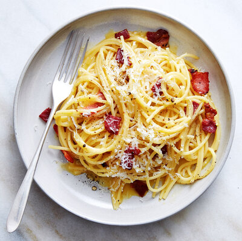
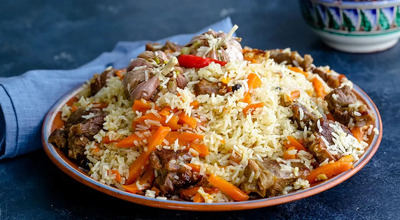
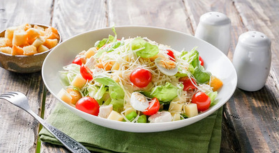
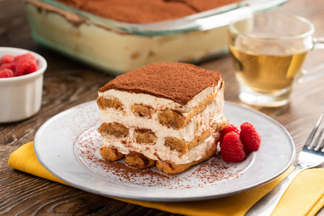
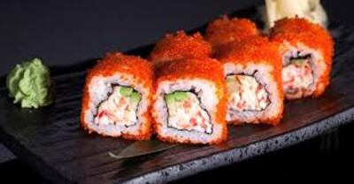

Рецепты

Борщ классический
- Мясо
- Свекла
- Капуста
- Картофель
| Время приготовления |
Порций |
Сложность |
| 2 часа |
6 |
Средняя |
Ингредиенты:
- Мясо - 500г
- Свекла - 2шт
- Капуста - 300г
- Картофель - 4шт

Паста Карбонара
- Спагетти
- Бекон
- Яйца
- Пармезан
| Время |
Порций |
Сложность |
| 30 минут |
4 |
Легкая |
Ингредиенты:
- Спагетти - 400г
- Бекон - 200г
- Яйца - 4шт
- Пармезан - 100г

Узбекский плов
| Время |
Порций |
Сложность |
| 2.5 часа |
8 |
Средняя |
Ингредиенты:
- Рис - 1кг
- Баранина - 700г
- Морковь - 600г
- Лук - 400г

Салат Цезарь
- Куриное филе
- Салат романо
- Сухарики
- Пармезан
| Время |
Порций |
Сложность |
| 40 минут |
4 |
Легкая |
Ингредиенты:
- Куриное филе - 300г
- Салат романо - 1шт
- Сухарики - 100г
- Пармезан - 50г

Тирамису
- Маскарпоне
- Печенье савоярди
- Кофе
- Яйца
| Время |
Порций |
Сложность |
| 1 час |
6 |
Средняя |
Ингредиенты:
- Маскарпоне - 500г
- Печенье савоярди - 200г
- Кофе - 200мл
- Яйца - 3шт

Роллы Калифорния
- Рис для суши
- Крабовые палочки
- Авокадо
- Огурец
| Время |
Порций |
Сложность |
| 1.5 часа |
4 |
Сложная |
Ингредиенты:
- Рис для суши - 400г
- Крабовые палочки - 200г
- Авокадо - 1шт
- Огурец - 1шт